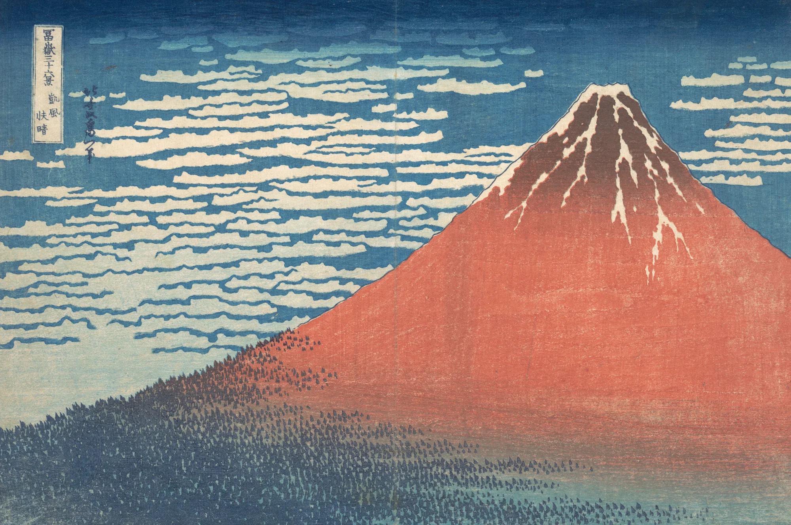
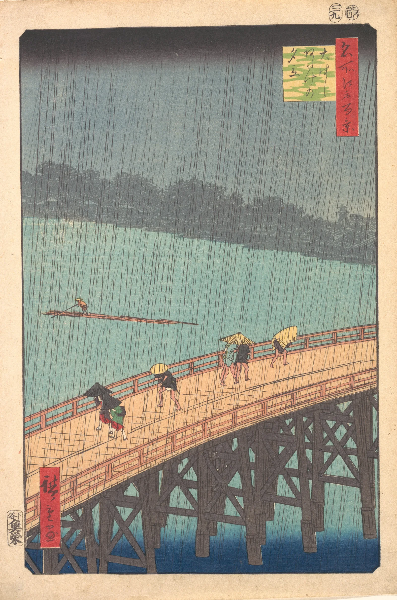

A print like this began with a publisher. Nishimuraya Yohachi, who traded as Eijudō, bought the design from Hokusai, then past seventy, as one of a set of views of Mount Fuji, and paid for everything that followed. A clean copy of the drawing went to the carver, who pasted it face down on a plank of mountain cherry, sawn along the grain and planed smooth, rubbed the paper thin until the lines showed through from behind, and cut away everything that was not a line. The drawing was destroyed in the cutting. What survived was the key block: the picture in outline, standing a few millimetres proud of the wood.
From that block he pulled a handful of proofs, and on them the artist marked where each colour should go, one proof to a colour. Each was pasted on a fresh block and cut in turn: the red of the mountain, the sky, the forest and its trees, the shadow on the summit. Every block carried the same two small ridges in its margin, an L at one corner and a short straight stop along the bottom edge, so that a sheet laid against them would fall in the same place every time.

The printer worked at a low bench with the block in front of him and a stack of damp paper at his side. The paper was kōzo, made from the inner bark of the mulberry, sized with alum and glue and dampened the night before so that it would take the colour and hold its size. He brushed pigment onto the block with a little rice paste to give it body, laid a sheet against the marks, and rubbed its back with a baren, a coil of twisted bamboo cord in a shallow disc wrapped in a bamboo sheath, working it in small circles and zigzags across the block until the colour came through to the face. Then he peeled the sheet away, set it on the stack, and inked again. He printed the whole edition, perhaps two hundred sheets, from one block before he moved on to the next, the palest colours first and the darkest last.
The blue of the sky is graded by hand. Before each impression he wiped the inked block with a damp cloth so that the colour thinned toward the horizon; it is called bokashi, and because it was done again for every sheet, no two skies are quite the same. The blue itself was new. Prussian blue had only lately come to Edo in quantity, by way of the Chinese and Dutch ships at Nagasaki, and this series was among the first to make so much of it. Look closely at the red and you can see the grain of the cherry, printed with the colour.

A generation later, in the ninth month of 1857, the publisher Uoya Eikichi brought out this summer storm on the Ōhashi bridge as one of Hiroshige's hundred views of Edo; the two round seals in the upper margin are the censor's, giving the year and the month. Hiroshige was sixty and had a year to live. The rain is two blocks of fine lines, one black and one a shade paler, cut at slightly different angles so that the shower seems to come down in sheets. To print them the carver left every line standing alone, a ridge of cherry no wider than a hair, the whole height of the block.
The dark band across the top of the sky was wiped in sumi, as the blue was over Fuji, and under the bridge the pale river deepens into a second bokashi of Prussian blue. The series sold, and the blocks were inked and rubbed again and again for years after the first edition. Thirty years on, in Paris, Vincent van Gogh copied this print in oils and painted a border of characters around it, taken from other prints, that he could not read.